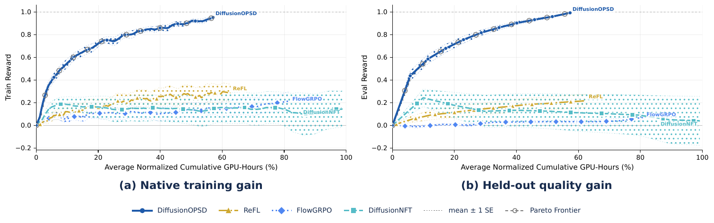
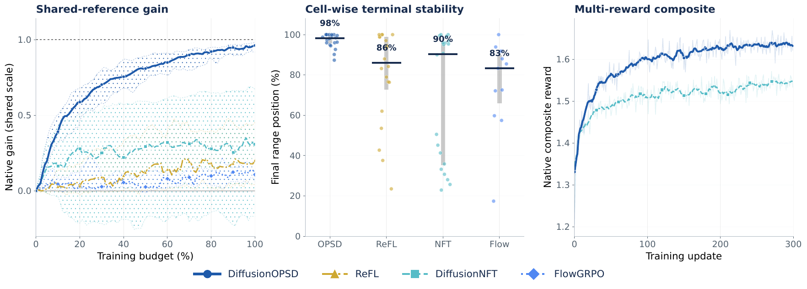

Collect on-policy queries
A frozen behavior policy generates trajectories and supplies low-noise query states and clean-output anchors.
ByteDance Seed · Vision Research · August 2026
On-Policy Self-Distillation in Diffusion Models
We convert image-level reward guidance into bounded positive and negative targets for clean-output predictions—then continually refresh that supervision as the behavior policy evolves.
On-policy self-distillation
Mainstream endpoint rewards tell us whether an image is good, but not how an intermediate denoising prediction should change. DiffusionOPSD closes this supervision gap by constructing reward-improving targets at sampled low-noise queries.
A frozen behavior policy generates trajectories and supplies low-noise query states and clean-output anchors.
Normalized reward ascent and descent create positive and negative targets inside a controlled clean-output radius.
The trainable policy fits detached targets under a finite budget; EMA then refreshes the behavior policy for the next iteration.
Model performance
Matched experiments span SD3.5-M and the step-distilled Z-Image-Turbo, covering ten evaluators and both reward-specific and joint training settings.
best final held-out scores in reward-matched settings
relative gain over the strongest competing method
fewer training GPU-hours than DiffusionNFT on SD3.5-M
fewer training GPU-hours than DiffusionNFT on Z-Image-Turbo
Main comparison
| Model | Specific | Updates | Open-Sourced Evaluators | Internal Evaluators | ||||||||
|---|---|---|---|---|---|---|---|---|---|---|---|---|
| Pick | CLIP | HPSv2.1 | Aes | ImgR | HPSv3 | DeQA | AltCLIP | Point | Pair | |||
| SDXL ‡ | × | – | 22.42 | 0.287 | 0.280 | 5.60 | 0.76 | 1.93 | 4.17 | 0.366 | 0.089 | 0.168 |
| SD3.5-L ‡ | × | – | 22.91 | 0.289 | 0.288 | 5.50 | 0.96 | 5.04 | 4.26 | 0.393 | 0.171 | 0.361 |
| FLUX.1-dev ‡ | × | – | 22.84 | 0.295 | 0.274 | 5.71 | 0.96 | 6.71 | 4.41 | 0.376 | 0.179 | 0.323 |
| SD3.5-M w/o CFG ‡ | × | – | 20.51 | 0.237 | 0.204 | 5.13 | −0.58 | −6.47 | 3.30 | 0.276 | 0.026 | 0.069 |
| + CFG ‡ | × | – | 22.34 | 0.285 | 0.279 | 5.36 | 0.85 | 2.69 | 4.04 | 0.380 | 0.136 | 0.290 |
| + FlowGRPO ‡ | × | >5k | 22.51 | 0.293 | 0.274 | 5.32 | 1.06 | 2.65 | 4.01 | 0.393 | 0.181 | 0.388 |
| + FlowGRPO 2k | × | 2k | 22.41 | 0.290 | 0.280 | 5.32 | 0.95 | 2.67 | 4.06 | 0.387 | 0.151 | 0.314 |
| + FlowGRPO 4k | × | 4k | 23.50 | 0.280 | 0.316 | 5.90 | 1.29 | 7.08 | 4.15 | 0.397 | 0.162 | 0.325 |
| + DiffusionNFT ‡ | × | 1.7k | 23.80 | 0.293 | 0.331 | 6.01 | 1.49 | 7.48 | 4.34 | 0.398 | 0.111 | 0.296 |
| + DiffusionNFT | × | 300 | 23.62 | 0.294 | 0.340 | 6.02 | 1.45 | 8.36 | 4.32 | 0.397 | 0.150 | 0.294 |
| + DiffusionOPSD jointours | × | 300 | 25.51 | 0.333 | 0.389 | 6.03 | 1.51 | 9.41 | 4.40 | 0.399 | 0.170 | 0.345 |
| + DanceOPD † | × | 300 | 23.06 | 0.272 | 0.322 | 5.98 | 1.23 | 7.24 | 4.34 | 0.378 | 0.127 | 0.219 |
| + DiffusionOPD † | × | 300 | 23.05 | 0.269 | 0.322 | 6.04 | 1.23 | 7.39 | 4.34 | 0.373 | 0.122 | 0.199 |
| + FlowOPD † | × | 300 | 22.62 | 0.263 | 0.300 | 5.98 | 0.92 | 5.00 | 4.20 | 0.353 | 0.101 | 0.166 |
| + ReFL | ✓ | 100 | 23.92 | 0.308 | 0.358 | 12.09 | 1.28 | 9.33 | 4.85 | 0.408 | 0.193 | 0.290 |
| + DiffusionNFT | ✓ | 100 | 23.43 | 0.298 | 0.336 | 9.11 | 1.46 | 9.14 | 4.76 | 0.412 | 0.199 | 0.323 |
| + DiffusionOPSDours | ✓ | 100 | 24.94 | 0.340 | 0.390 | 12.08 | 1.76 | 13.34 | 4.94 | 0.450 | 0.214 | 0.465 |
| Z-Image-Turbo | × | – | 22.86 | 0.276 | 0.296 | 5.41 | 0.96 | 6.19 | 4.44 | 0.392 | 0.213 | 0.422 |
| + FlowGRPO | ✓ | 100 | 22.96 | 0.275 | 0.305 | 5.46 | 1.01 | 7.11 | 4.51 | 0.394 | 0.217 | 0.420 |
| + ReFL | ✓ | 100 | 24.54 | 0.313 | 0.380 | 9.79 | 1.37 | 13.77 | 4.60 | 0.441 | 0.227 | 0.481 |
| + DiffusionNFT | ✓ | 100 | 22.28 | 0.280 | 0.277 | 6.07 | 0.58 | 1.58 | 3.37 | 0.363 | 0.166 | 0.357 |
| + DiffusionOPSDours | ✓ | 100 | 25.15 | 0.320 | 0.390 | 10.74 | 1.79 | 14.44 | 4.78 | 0.451 | 0.243 | 0.551 |
Normalized progress
Training reward and held-out quality are reported separately, while cumulative GPU-hours provide a common compute axis across methods.

Strong final reward with a 40% reduction in profiled training cost.
Consistent improvement under a step-distilled native schedule with 63% lower training GPU-hours.
Diagnosable alignment
Explicit supervision lets us audit target construction and finite realization as separate stages. The diagnostics below move from local direction attribution to same-query fitting, then test whether the complete protocol remains stable across budgets, backbones, and reward settings.
Fixed-suffix reward gain from the reward-gradient positive target.
Prompts where the better constructed target produces the lower finite update.
Held-out, same-query probes with parameters restored between prompts.
Three linked diagnostics compare target direction, implementation sensitivity, and the full train/eval CFG grid. Hover or focus any mark for its exact value; click to keep a selection while comparing panels.
Shared-reference progress, cell-wise terminal position, and joint multi-reward training show that the default remains effective across target radius, query noise, fit scale, behavior EMA, and related training choices.

DiffusionOPSD exposes all three without treating any one of them as a substitute for the others.
Target construction and finite realization should be evaluated separately in diffusion post-training.
Evaluation principleHeld-out comparisons
Across rendered text, motion, structured diagrams, object composition, and fine detail, DiffusionOPSD preserves the requested content more consistently than the compared baselines.
Creativity unleashed
From photorealism and typography to instructional graphics and fantastical scenes, one training paradigm supports a broad range of creative objectives.
View GalleryCitation
DiffusionOPSD Team. “On-Policy Self-Distillation in Diffusion Models.” Technical report, ByteDance Seed, 2026.
@techreport{diffusionopsd2026,
title = {On-Policy Self-Distillation in Diffusion Models},
author = {{DiffusionOPSD Team}},
institution = {ByteDance Seed},
year = {2026},
month = {August},
url = {https://diffusionopsd.github.io/}
}